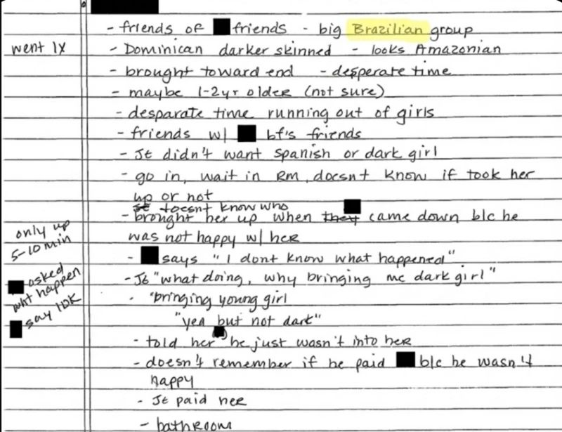

The Brazil Files: Jeffrey Epstein's Hidden Network in South America
Os Arquivos do Brasil: A Rede Oculta de Jeffrey Epstein na América do Sul
A 9-part BBC News Brasil investigation that uncovered Epstein's connections to Brazilian models, a recruitment network, financial ties to São Paulo, and a Federal Prosecution probe sparked by the reporting.
Uma investigação em 9 partes da BBC News Brasil que revelou as conexões de Epstein com modelos brasileiras, uma rede de recrutamento, vínculos financeiros com São Paulo e uma investigação do MPF desencadeada pela reportagem.
About This Investigation
Sobre Esta Investigação
Key Findings
Principais Descobertas
In late 2024 and 2025, the U.S. Department of Justice released thousands of documents from the Jeffrey Epstein case following a federal court order. These files contain more than 4,000 references to Brazil—an extraordinary number that points to a systematic and deliberate effort to recruit and exploit Brazilian women.
No final de 2024 e em 2025, o Departamento de Justiça dos EUA divulgou milhares de documentos do caso Jeffrey Epstein após determinação judicial. Esses arquivos contêm mais de 4 mil menções ao Brasil—um número extraordinário que aponta para um esforço sistemático e deliberado de recrutar e explorar mulheres brasileiras.
This 9-part investigation by BBC News Brasil reveals how Epstein and his associates planned to infiltrate Brazil's modeling industry, the identities of the gatekeepers who facilitated connections, the financial transfers made to Brazilian women, and how the Federal Prosecution Service (MPF) launched an official investigation into human trafficking networks—directly sparked by this reporting.
Esta investigação em 9 partes da BBC News Brasil revela como Epstein e seus associados planejavam se infiltrar na indústria de modelagem do Brasil, as identidades dos facilitadores das conexões, as transferências financeiras feitas a mulheres brasileiras, e como o Ministério Público Federal (MPF) abriu uma investigação oficial sobre redes de tráfico de pessoas—diretamente desencadeada por esta reportagem.
The Complete Series
A Série Completa

Jeffrey Epstein Funded Brazilian Models and Warned Days Before His Arrest
Jeffrey Epstein financiou modelos brasileiras e avisou dias antes sobre sua prisão

Inside Epstein's Brazilian Network: Scouts, Magazines, and Fashion Contests
Os indícios de como Epstein pretendia recrutar mulheres no Brasil

New Documents Reveal Epstein's Ties to a 'Major Brazilian Group'
O elo do caso Epstein com o Brasil: 'Grande grupo brasileiro'
'Around 50 Brazilian Women' at Epstein's Mansion, Survivor Says
'Umas 50 brasileiras' estiveram na mansão do bilionário, diz vítima

BBC Investigation Prompts Federal Prosecution Probe
MPF abre investigação sobre rede de aliciamento após reportagem da BBC
Epstein Had a Brazilian Tax ID and Sought Connections to Businessmen
Epstein tinha CPF e tentou ponte com empresários brasileiros
The Mother Who Saved Her Daughter from Epstein's Network
A Mãe Que Salvou a Filha da Rede de Epstein